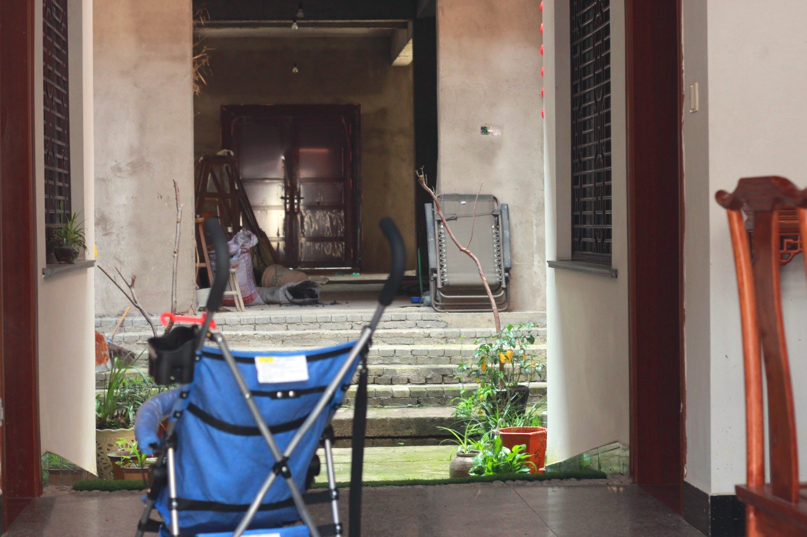
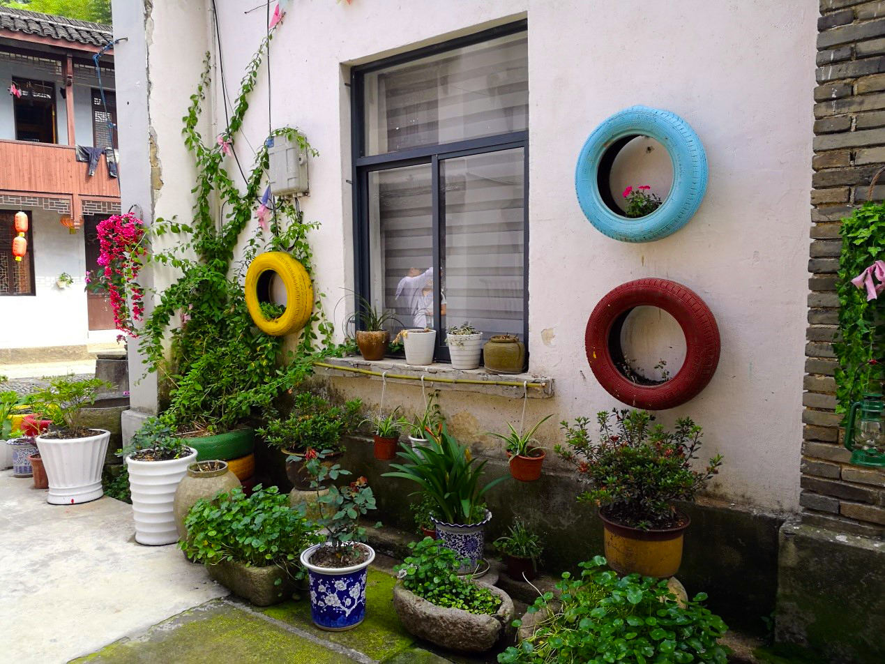
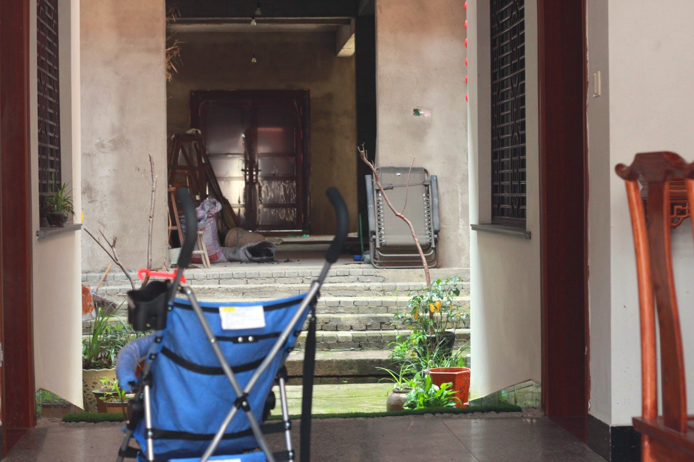
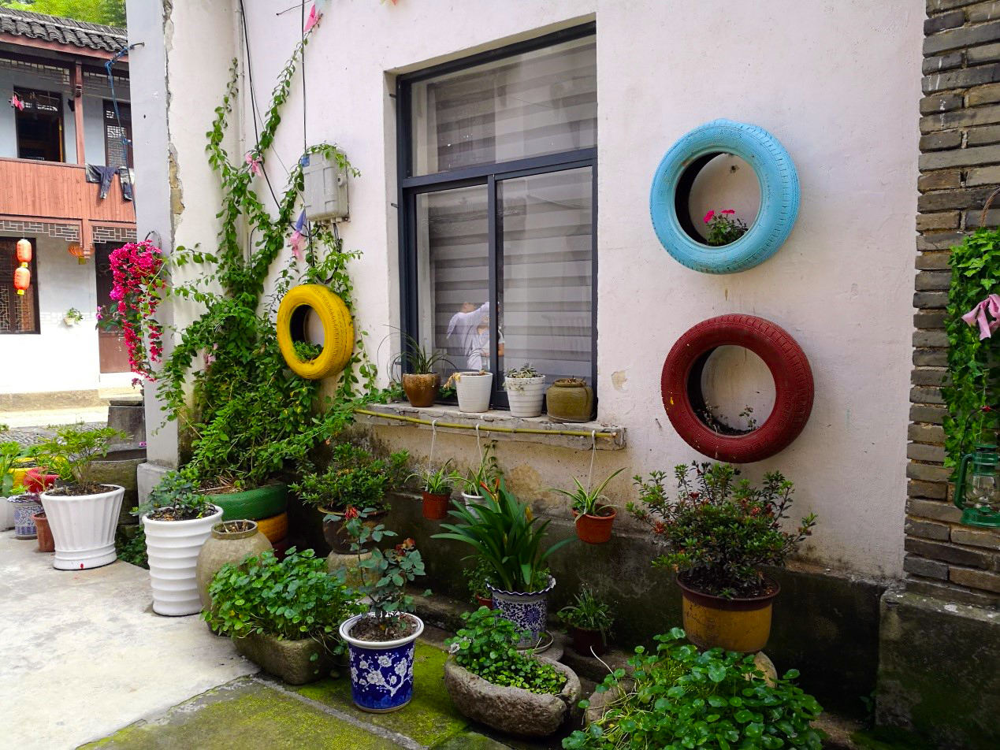

二、徜徉老街

 



河桥这个地名,最旱出现应在明化(1465-1487)之后。
南宋咸淳年间(1265-1274),昌化(县)分玉山、金山、永丰、吴安四乡,以昌化县城为中心,左上区是玉山乡,右上区是水丰乡,左下区是金山乡,右下区为吴安乡。河桥隶属吴安乡,当年的名称叫吴安乡道泰里。古代的“里”是“乡”以下的地 方组织,有“百家为里”的说法,乡民常称“里人"。
至明成化年间,据《杭州府志》记载,昌化仍分四乡,辖五十“里”。
清康熙(1662-1722)前,昌化已分成“十·二都”(其中二、六都撤并)康熙《昌化县志》有“河桥”之名称:“河桥,县南十五里,属五都,周龙骐河桥形胜记入艺文。”后来昌化县设堪村、朱柳、河桥、颊口四镇。清雍正七年(1729),昌化县划分为150庄,其中有五都河桥庄。道光年间(1821-1850),又出现“市”的概念,全县设县市、栗树溪市、赤石市、白牛四市。这个“市”,不是现在的城市,它是商贸集市,是人流密集、生意兴隆的热闹之村,归乡镇管辖。四个集市中,河桥有果树溪、赤石两个,足见河桥商贸之兴旺发达。县志给出的条目解释是:“栗树溪市,在四都下阮庄,昔为商民聚居、舟楫停泊之所；赤石市,在七都街,昌淳两邑山货所聚。”由此可见,河桥这一地名,是在明成化与清康熙期间立生的,其由来也没有什么典故,仅仅是因桥而得名:“河桥,县南十五里,旧日系木桥上加沙灰,俗名石灰桥。康熙八年,石室寺僧募建砖桥,乾隆四十六年里人郑俊候改建石桥,后圮,光绪二十八年里人胡书奥等重葺”。
现今的河桥,政区轮廓基本保留着清朝时的模样。所谓河桥古镇,其实就是一条街。老街即古镇,古镇亦老街。沿山傍水的街道,挤挤挨挨的房子加上深浅不一的十几条弄堂,看上去像是玉屏山下的卧龙,又仿佛是柳溪江边的一艘老船。
“唐昌首镇”门楼下伸延。这种门楼,好像是街亭,分踞于老街东西两端,河桥人习惯把它称为“城门”。据传,那时的“城门”,“磐石坚木筑之,上有街楼,高三丈,宽二丈”。门楼下的通道,“阔可通车马”,厚重的铁环大门“刀箭不入”。大门昼开夜闭,以阻盗贼,若有乡人夜归,或呼叫或击缶,门丁以火把照之,非街坊居民概不启闩。遗憾的是,如此高耸坚实的街楼城门不知何时消失了,是毁于兵火,还是圮于失修?看来,岁月真的无情,任何“磐石”“坚木”,都挡不住历史风雨的摧残。
清朝、民国时,出西端城门,有两条路,往南沿河过石灰桥通往七都八都,直至淳安;向西笔直通往五都蒲村峡川。因此,门开二洞,一门朝南,一门朝西。如今,我们所见到的有“唐昌首镇”四字的西端“城门”,是20世纪70年代河桥中学章敦尚先生与誉光村泥瓦名匠杨朝中、王家槐合作的成果。几十年过去了,“城门”经风霜剥蚀,略带沧桑之感,所以青少年和外地人都以为是古代遗迹。
1942年,国民党多支部队驻扎河桥,昌南区公所、浙西行署办事处以及行署兵工厂(修械所)也在此地因此河桥成了日军的攻击目标。5月的一天,日机飞临河桥上空在下阮、白下下、警局门口、茄村田畈及城门一带,投下七八枚燃烧弹,炸死乡民数十人。其中茄村畈炸死耕田农夫2人、水牛1头古镇上炸死居民3人,包括城门在内的几十间民房被烧毁,城门口那株古柏亦成半树焦枝。城门带遭轰炸后,直至新中国成立初期还是一片瓦砾废墟。
穿过城门,漫步于老街,街道微弯,不能一目了然,仿佛有意留一点神秘的气息、曲径通幽的雅致。老街东西走向,长达千余米,徽式建筑,很有屯溪老街的格调。街道用石板和鹅卵石铺设,平整而干净。20世纪60年代以前,街面全是青石板,被踩磨得油光发亮,雨后不积水,夜晚有反光。两旁是江南传统建筑中固有的封火墙,很自然地把街道两边的房子分隔成一家一家店铺。街上的房子,新旧交错,百年以上的老宅占半成以上。高踞于屋巅的“马头”,翘着大拇指般的挑肩,静静地俯视着街面与行人。
老街石板底下,有一条叫“奥沟”的水渠,冠名“太平沟”或“太平官沟”,这是老街独具魅力的特色之一。水从镇西石壁湾缓缓流来,安详地经过每家每户的门前,每隔几十米开出一个口子,并且与大户人家的天井门堂相沟通,可给家中鱼池注进活水。太平沟的来历,有说是洪、胡两姓族人联手开凿的,有说是官府出资开凿的。这是历史的遗存,从前小孩子能从沟底的泥沙中摸出古镇的碎物:铜钱、玉珠、银链、发簪、断戒、铁扣……·有人说,“太平沟”贯穿全街,是古镇龙脉。沟活,则古镇兴;沟淤,则古镇亡。接通自来水之前,女人在这里洗菜浣衣,男人在这里濯足沐身。要是遇到火灾,它是消防水源倘若遭洪水袭扰,又成泄洪通道。太平沟是河桥人民的生活之水、纳凉之水防灾之水,河桥人称之为“吉祥水”,理应好好保护。
除了“太平沟”,河桥老街尚多泉井。河桥依山傍河,不缺水源,但山洪暴雨一来,河水浑黄,不能饮用,故须筑水井。据传,明清时河桥有井18口井水冬暖夏凉,清澈洁净,汲取也很方便。如今仍可用的尚有5处,即城门东井、相公井、塘坞井、神妙泉、盐置井。相公井据说是吴越柯老相公唐昌治水时所开凿,至今已逾千年。清道光二十九年(1849)闰四月,浙西地震引发洪水,昌化一带山崩石裂,田积沙石,泉井被淤,漂毁庐室无数。四年后的咸丰三年(1853),浙西再次遭地震,多数泉井塌埋,相公井亦未幸免。直至20世纪70年代,曙光村村民在原井址挖掘重建,相公井才得以重见天日。
街道窄窄的,宽不过三五米,听得见对门的说笑声,看得清端着饭碗站在门口的邻居筷子夹着的菜肴。店铺里的伙计,如果从柜台里伸出手来,也许就能拉住街上的行人。楼房二层的居多,从门里望进去,深邃而不知底细。两排对峙着的屋檐,最窄处几乎相碰,只留出一条带状的天空。要是下雨,两排檐水会喷下来,垂下一条茫茫的水幕。倘若拿根竹竿,一头搁在自家楼窗,头搭在对门屋背,就可以晾衣裤了,有时灯笼就是这样挂的。街上的店铺都很小,经营的都是生活中最常见的东西,便宜而实用,简单又齐全。店家苦心经营着他们亲自创办或祖上传下来的小本生意,虽发不了大财,小日子却也过得滋润。
徜徉老街,留心观察,会发现墙头上残留着不少老式标语。“野营训练是种好方法”,落款是杭州市轻工系统野营队,刷写时间为1971年2月。“大批资本主义,大批修正主义,大搞社会主义”“要斗私批修”“深挖洞、广积粮、不称霸”“农业的根本出路在机械化”等,都是“文革”的产物。“严防台湾空降特务”“粉碎美蒋勾结反攻大陆”,虽然写于20世纪60年代初,但依旧矾红未褪,历历在目。再早一些,还有“打倒日本帝国主义”“誓死抗战到底!”等,须仔细辨认才能看出,毕竟七十多年了。现在,这几句隐约可见的标语上面,覆盖着“伟大领袖毛主席万岁!”等。这些标语,是时代的烙印、历史的印痕,也是追忆往事的触角。
随意地走进一户人家,跨进尺把高的门槛,便站在了主人房屋的前厅要是早些年,这里必定还是店堂,因为看得出当年排门框台的形象,门槛上还留着上排门的沟槽。前厅与中堂之间是天井,有时燕子会从天井俯冲下来,把嘴里衔着的小虫哺给楼板下泥窝里的乳燕,然后又蹿出天井,直冲云天。中堂即是“堂前”“上皇头”,是从前家族祭祀、聚会,办理婚丧大事的场所,显得格外宽敞。从中堂的边门继续进去,就是别有洞天的后院了。厨房、柴屋、猪圈、菜地都有,一直可以通到河边的溪埠。
沿河缓缓而行,见到的又是另外一种风景:远处的山峦、近处的田野溪中的石堰、水上的木桥……沿河的路很窄,脚步几乎碰着墙根。石缝里窜出的灌木枝条,墙上爬满的野藤蒿草,以及路边颜色苍老的系船石,都在诉说着古镇的历史,仿佛一位垂暮的老人正拄着拐杖,伫立在河边,向人们讲述着那些光阴的故事。蹲在河埠,俯首可视水中沙石游鱼;一边聆听流淌的边凝望沿河而筑的楼宇房屋,遥想着古人怎样在此叠石垒、砌砖造房,那真是“心鹜八极,神游万仞”。
据说,民国时期的河桥街异常热闹。如果置身其中,同大强、胡福隆、同怡昌、永和财、胡森盛张瑞华、许益隆、物育堂、积善堂惠元堂、光裕堂、胡升号、余义泰卢永兴、胡震丰、兴隆斋、夜旺阁汪益茂、同立祥、柴志振等数不胜数的老字号一个接一个映入眼帘,黝黑的门框上贴着红底黑字的对联,空气中弥漫着蚕茧、生丝、茶叶、药材、萸肉的味道,叫卖声此起彼伏,或急促,或高亢,或悠远,如同跌进了一条涨水了的商业小河,似乎有无形的手拉着你驻足店前,又有汹涌的波涛推着你继续往前游。店有店规,商有商道。一家紧挨一家的店铺,都秉承着谦恭而守规矩的徽商遗风,无论掌柜伙计,站有站相,坐有坐姿;立不倚门,笑不露齿;热情而不强行拉客,交谈而无太多寒喧。
那时,在街道的开阔处,往往歇着竹木柴炭的担子。挑夫们坐在街沿的石条上,啃着烧饼,擦着汗水,一言不发等待买主上前问价。而刚上岸的船工,腿肚上还滴着水珠,就忙不迭地走进了酒店。他们是“灶头打在脚背上”的男人,“喝大碗酒,吃大块肉”,是人生中必不可少的风景。夜幕下的老街,店家点亮了煤汽灯,两边并排的“灯光”摇曳着一字铺开,就像两条暖色的动感的线条,柔情地延伸开去,圈住了两边的房子,热辣辣地撩拨着行人的思绪。人流丝毫不比白昼少,算盘照样拨得嗒嗒响。望着熙熙攘攘的行人,灯影里的老板显得更有精神,底气十足。
走在老街上,踩着脚下的石板路,望着斑驳古旧的街房,抚摸着老墙门上生锈的铜环,或干脆坐在磨得油光发亮的青石门槛上遥想,感觉像是在触摸古镇的根须,阅读一本泛黄了的线装书。
河桥隶属原昌化县,历来为吴越之境,因物华天宝,邑水口形胜,商务独冠唐昌”,而被称作“唐昌首镇”。河桥老街,在